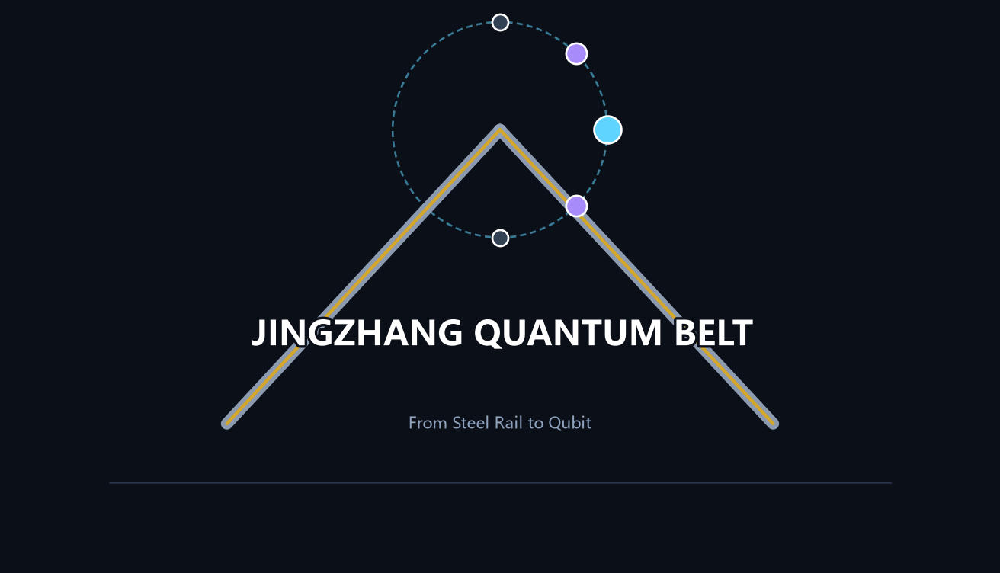

Self-check result: formal-review-ready · only 3 provisional-boundary notes (allowed, non-blocking) · full report in self_check.json
The Jing-Zhang Railway was China's first trunk line designed and built by Chinese engineers (1909, Jeme Tien Yow's herringbone alignment); the quantum anomalous Hall effect was a Nobel-caliber physics breakthrough on Chinese soil (2013, discovered by Xue Qikun's team at Tsinghua); in 2026, the corridor along the railway is designated as an AI innovation belt — this proposal organizes the three eras into a centennial relay of self-reliant innovation, anchoring quantum information as the next-generation compute foundation for a "Quantum × AI" innovation system.
| Unit | Name | Positioning | Quantum concept |
|---|---|---|---|
| Zhongzhiyuan AI Acceleration Area | 叠加场 SUPERPOSITION YARD | Quantum–classical hybrid compute test belt | Superposition: full-stack innovation and quantum compute in one space |
| Beijing AI Origin Community | 纠缠社区 ENTANGLED COMMUNITY | Near-campus conversion and open source | Entanglement: separated yet logically linked university–enterprise–talent ecosystem |
| Dazhongsi AI Industry Cluster | 隧穿坊 TUNNELING QUARTER | AI-native consumption and data factors | Tunneling: new businesses crossing the traditional commercial barrier |
| Zhongguancun Technology Service Wing | 相干翼 COHERENCE WING | Global factor allocation, capital and IP | Coherence: in-phase stacking of factor allocation |
| Xiaoyuehe Scenario Wing | 观测翼 OBSERVATION WING | AI scenario empowerment and public experience | Measurement collapse: scenario as measurement, public as observer |
Spatial structure: one axis, three states, two wings, multiple nodes — the "Coherence Timeline" (Jing-Zhang Heritage Park, north–south) connects Superposition Yard, Entangled Community, and Tunneling Quarter; Coherence and Observation wings support; 12 scenario nodes form a network; three east–west "tunneling corridors" stitch the city on both sides of the park.
8 global ecosystem cases (model-level public-report distillations as reference mechanisms for professional deepening): BAQIS (local anchor), Hefei quantum cluster, IBM Quantum Network, Kendall Square, Station F, one-north, Shenzhen Hetao, Zhangjiang AI Island. Full mapping in proposal.md.
| No. | Scenario card | Type | Spatial carrier |
|---|---|---|---|
| 01 | Quantum Hardware Testbed | Test/validation T1 | Superposition Yard |
| 02 | Quantum Secure Public Channel | Test/validation T2 | Observation Wing / government node |
| 03 | QRNG Public Benchmark Station | Test/validation T3 | Observation Plaza |
| 04 | Superposition Platform | Public space | North end of Coherence Timeline |
| 05 | Entangled Lab | Industry collaboration | Entangled Community |
| 06 | Tunneling Commercial Street | AI-native consumption | Tunneling Quarter |
| 07 | Observation Plaza | Participatory governance | Entangled Community |
| 08 | Quantum Science Museum | Science education | Entangled Community |
| 09 | Coherence Timeline Trail | Cultural experience | Jing-Zhang Heritage Park |
| 10 | Open Source Hall | Developer community | Entangled Community |
| 11 | AI Wayfinding | AI+transport | Whole slow-traffic network |
| 12 | Data Factor Lounge | Data factor | Tunneling Quarter |
| 13 | Quantum Secure Finance Channel | Industry scenario | Superposition Yard / finance node |
| 14 | Quantum Key Testing & Certification Center | Industry scenario | Superposition Yard |
| 15 | QKD North Node (toward Qinghuayuan Station heritage site) | Industry access | North end of Coherence Timeline |
| 16 | QKD Central Node (toward Wudaokou) | Industry access | Mid main axis |
| 17 | QKD South Node (Dazhongsi Station) | Public experience | Around Dazhongsi Station |
| 18 | Quantum Security Laboratory | Industry infrastructure | Superposition Yard |
| 19 | QKD Relay Node · Qinghe Bridge | Network relay | North section |
| 20 | QKD Relay Node · Zhichun Road | Network relay | North-central section |
| 21 | QKD Relay Node · Jimen Bridge | Network relay | Central-south section |
| 22 | QKD Relay Node · Xizhimen Direction | Network relay | South section |
| 23 | Quantum Security Industry & Employment Service Center | Industry service | Observation Wing / Entangled Community |
Quantum-secure city lifeline: QKD backbone-relay-access three-layer network (3 hubs + 4 relays) → quantum security laboratory cluster → six job-family directions (all conceptual)
| Landmark | Location | Design concept |
|---|---|---|
| Qubit Monument (Superposition Platform) | North end of Coherence Timeline (conceptual site near Qinghuayuan Station) | Qubit superposition-dot installation commemorating the self-reliance relay |
| Observation Plaza | Entangled Community | "Participation as measurement" governance metaphor + QRNG benchmark station |
| Coherence Timeline cultural nodes | Along Jing-Zhang Heritage Park | 1909/2013/2026 three-line narrative installations and wayfinding |
| Agent Contribution Honor Wall | Beside Open Source Hall | Honor display system for agents and developers, echoing the event memorial mechanism |
All landmarks are conceptual suggestions requiring heritage, approval, and copyright clearance before deepening; none are approved construction.
Annual system: "one forum, two competitions, one week, one festival" — Quantum-AI Biennial Forum (aligned with ZGC Forum), Quafu Cup (co-hosting suggestion), Jing-Zhang Open Source Marathon, International Quantum-AI Developer Week, Superposition Festival public open day. Developer community via Open Source Hall, honor wall, and scenario-open operation; conversion path: testbed → scenario validation → enterprise services → policy matchmaking.
| Phase | Period | Focus |
|---|---|---|
| Near term | 2026–2028 | Coherence Timeline trail stitching, Observation Plaza, quantum testbed pilot, Global AI event week route (light facilities and operations) |
| Mid term | 2029–2032 | Tunneling corridors, Entangled Community conversion street, Tunneling Quarter station-city integration, Quantum Science Museum |
| Long term | 2033+ | Industrial upgrading, governance framework consolidation, mature international operations |
Note: boundary and parcel locations are schematic; full recalculation required when official data is released.
| Level | Scope | Focus of this proposal |
|---|---|---|
| Coordinated research area | 43.6 km² | Quantum × AI ecosystem, future city form, naming system |
| Overall design area | ~11.4 km² | One-axis-three-states-two-wings structure, land use, transport, character |
| Key areas | 368.4 ha | Detailed design of Superposition Yard, Entangled Community, Tunneling Quarter |
| Land use (concept) | Layout | Rationale |
|---|---|---|
| AI R&D innovation land | Superposition Yard core | Quantum–classical hybrid compute test belt |
| Education/research land | Entangled Community | Near-campus conversion, open source |
| Commercial/business land | Tunneling Quarter | AI-native consumption, data factors |
| Residential land | East and central areas | Work–life balance, talent housing |
| Park green and open space | Heritage-park axis, Qinghe/Xiaoyuehe frontages | Blue-green public space network |
| Public service facility land | Observation Wing nodes | Innovation and talent life services |
| Mixed-use land | Transition zones around three states | Superposed living |
Mobility: rail anchors (Wudaokou, Qinghua East Road West, Dazhongsi) + Coherence Timeline trail (north–south) + three tunneling corridors (east–west stitching). Blue-green network: heritage-park axis, Qinghe and Xiaoyuehe frontages, node green spaces; green ratio 21.8% (provisional recalculation). Buildings: concept-level footprints (retain/renovate/new-build grading), 521,642 m², not statutory scale.
| Task | Response |
|---|---|
| agent.1 Naming/Logo | JINGZHANG QUANTUM BELT; quantum naming system for three areas and two wings; dot-connection wayfinding |
| agent.2 Ecosystem cases | 8 global cases; three-layer quantum–classical hybrid compute industry system |
| agent.3 Scenarios/personas | 12 scenario cards (incl. 3 test/validation) + 7 user personas |
| agent.4 Pilgrimage landmarks | Qubit Monument, Observation Plaza, Coherence Timeline nodes, Agent Contribution Honor Wall |
| agent.5 Cultural narrative | 1909 railway / 2013 science / 2026 intelligence three-line coherent narrative |
| agent.6 Long-term operations | One forum, two competitions, one week, one festival + developer community + conversion path |